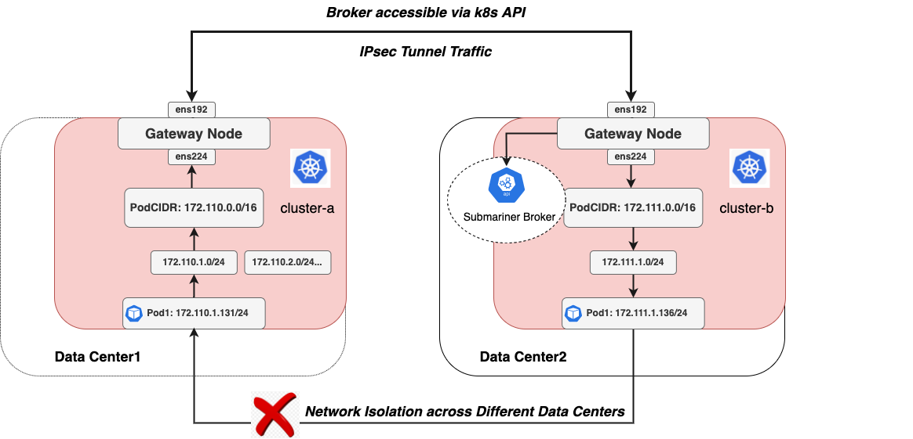

Multi-Cluster Networking
English | 简体中文
Backaround
Why Spiderpool need a multi-cluster network connectivity solution? Spiderpool requires a multi-cluster network connectivity solution for the following reasons: if our different clusters are distributed in the same data center, their networks are naturally interconnected. However, if they are spread across different data centers, the cluster subnets are isolated from each other and cannot communicate directly across data centers. Therefore, Spiderpool needs a multi-cluster network connectivity solution to address the issue of cross-data center multi-cluster network access.
Submariner is an open-source multi-cluster network connectivity solution that uses tunneling technology to establish direct communication between Pods and Services in different Kubernetes clusters (running locally or in the public cloud). For more information, please refer to the Submariner Document. We can leverage Submariner to assist Spiderpool in addressing cross-data center multi-cluster network access issues.
we will provide a detailed explanation of this feature.
Prerequisites
- At least two Kubernetes clusters without CNI installed.
- Helm and Subctl tools are already installed.
Network Topology Diagram

This network topology diagram provides the following information:
-
Clusters ClusterA and ClusterB are distributed across different data centers, and their respective cluster underlay subnets (172.110.0.0/16 and 172.111.0.0/16) cannot communicate directly due to network isolation in different data center networks. The gateway nodes can communicate with each other through the ens192 interface (10.6.0.0/16).
-
The two clusters are connected through an IPSec tunnel established by Submariner. The tunnel is based on the ens192 interface of the gateway nodes, and it also accesses the Submariner Broker component through the ens192 interface.
Quick Start
Install Spiderpool
-
You can refer to the installation guide to install Spiderpool.
-
Configure SpiderIPPool
Since Submariner currently does not support multiple subnets, you can split the PodCIDR of each cluster into smaller subnets. Specify MacVlan Pods to get IP addresses from their respective smaller subnets for Underlay communication. Note: Ensure that these smaller subnets correspond to the connected Underlay subnets.
For example, the PodCIDR of cluster-a is 172.110.0.0/16, you can create multiple smaller subnets (e.g., 172.110.1.0/24) within this larger subnet for Pod usage:
~# cat <<EOF | kubectl apply -f - apiVersion: spiderpool.spidernet.io/v2beta1 kind: SpiderIPPool metadata: name: cluster-a spec: default: true ips: - "172.110.1.1-172.110.1.200" subnet: 172.110.1.0/24 gateway: 172.110.0.1 EOFthe PodCIDR of cluster-b is 172.111.0.0/16, you can create multiple smaller subnets (e.g., 172.111.1.0/24) within this larger subnet for Pod usage:
-
Configure SpiderMultusConfig
Configure an SpiderMultusConfig in Cluster-a:
~# cat <<EOF | kubectl apply -f - apiVersion: spiderpool.spidernet.io/v2beta1 kind: SpiderMultusConfig metadata: name: macvlan-conf namespace: kube-system spec: cniType: macvlan macvlan: master: - ens224 ippools: ipv4: - cluster-a coordinator: hijackCIDR: - 10.243.0.0/18 - 172.111.0.0/16 EOFConfigure an SpiderMultusConfig in Cluster-b:
~# cat <<EOF | kubectl apply -f - apiVersion: spiderpool.spidernet.io/v2beta1 kind: SpiderMultusConfig metadata: name: macvlan-conf namespace: kube-system spec: cniType: macvlan macvlan: master: - ens224 ippools: ipv4: - cluster-b coordinator: hijackCIDR: - 10.233.0.0/18 - 172.110.0.0/16 EOF- Configuration of the host interface ens224 as the parent interface for Macvlan. Macvlan will create sub-interfaces on this network card for Pod use.
- Configuration of coordinator.hijackCIDR to specify the subnet information for the Service and Pods in the remote cluster. When a Pod is started, the coordinator will insert routes for these subnets into the Pod, enabling traffic to these destinations to be forwarded from the node. This facilitates better collaboration with Submariner.
Install Subamriner
To install Submariner using the Subctl tool, you can refer to the official Submariner documentation. However, when executing subctl join, make sure to manually specify the subnet for the MacVlan Underlay Pods mentioned in the previous steps.
# clusterA
subctl join --kubeconfig cluster-a.config broker-info.subm --clusterid=cluster-a --clustercidr=172.110.0.0/16
# clusterB
subctl join --kubeconfig cluster-b.config broker-info.subm --clusterid=cluster-b --clustercidr=172.111.0.0/16
Currently, Submariner only supports specifying a single Pod subnet and does not support multiple subnets.
After the installation is complete, check the status of the Submariner components:
[root@controller-node-1 ~]# subctl show all
Cluster "cluster.local"
✓ Detecting broker(s)
NAMESPACE NAME COMPONENTS GLOBALNET GLOBALNET CIDR DEFAULT GLOBALNET SIZE DEFAULT DOMAINS
submariner-k8s-broker submariner-broker service-discovery, connectivity no 242.0.0.0/8 65536
✓ Showing Connections
GATEWAY CLUSTER REMOTE IP NAT CABLE DRIVER SUBNETS STATUS RTT avg.
controller-node-1 cluster-b 10.6.168.74 no libreswan 10.243.0.0/18, 172.111.0.0/16 connected 661.938µs
✓ Showing Endpoints
CLUSTER ENDPOINT IP PUBLIC IP CABLE DRIVER TYPE
cluster01 10.6.168.73 140.207.201.152 libreswan local
cluster02 10.6.168.74 140.207.201.152 libreswan remote
✓ Showing Gateways
NODE HA STATUS SUMMARY
controller-node-1 active All connections (1) are established
✓ Showing Network details
Discovered network details via Submariner:
Network plugin: ""
Service CIDRs: [10.233.0.0/18]
Cluster CIDRs: [172.110.0.0/16]
✓ Showing versions
COMPONENT REPOSITORY CONFIGURED RUNNING
submariner-gateway quay.io/submariner 0.16.0 release-0.16-d1b6c9e194f8
submariner-routeagent quay.io/submariner 0.16.0 release-0.16-d1b6c9e194f8
submariner-metrics-proxy quay.io/submariner 0.16.0 release-0.16-d48224e08e06
submariner-operator quay.io/submariner 0.16.0 release-0.16-0807883713b0
submariner-lighthouse-agent quay.io/submariner 0.16.0 release-0.16-6f1d3f22e806
submariner-lighthouse-coredns quay.io/submariner 0.16.0 release-0.16-6f1d3f22e806
As shown above, the Submariner components are running normally, and the tunnels have been successfully established.
If you encounter issues with the tunnel not being established and the submariner-gateway pod remains in a CrashLoopBackOff state, potential reasons could include:
- Select suitable nodes as gateway nodes, ensuring they can communicate with each other. Otherwise, the tunnel will not be established.
- If the pod logs show: "Error creating local endpoint object error="error getting CNI Interface IP address: unable to find CNI Interface on the host which has IP from [\"172.100.0.0/16\"].Please disable the health check if your CNI does not expose a pod IP on the nodes", Please check if the gateway nodes are configured with addresses in the "172.100.0.0/16" subnet. If not, configure them. Alternatively, when executing subctl join, you can disable the health-check feature for the gateways:
subctl join --health-check=false ...
Create Deployment
-
Use the following commands to create test Pods and Services in clusters cluster-a and cluster-b:
cat <<EOF | kubectl create -f - apiVersion: apps/v1 kind: Deployment metadata: name: test-app spec: replicas: 2 selector: matchLabels: app: test-app template: metadata: annotations: v1.multus-cni.io/default-network: kube-system/macvlan-confg labels: app: test-app spec: containers: - name: test-app image: nginx imagePullPolicy: IfNotPresent ports: - name: http containerPort: 80 protocol: TCP --- apiVersion: v1 kind: Service metadata: name: test-app-svc labels: app: test-app spec: type: ClusterIP ports: - port: 80 protocol: TCP targetPort: 80 selector: app: test-app EOF -
Check the running status of the Pods:
View in Cluster-a:
[root@controller-node-1 ~]# kubectl get po -o wide NAME READY STATUS RESTARTS AGE IP NODE NOMINATED NODE READINESS GATES test-app-696bf7cf7d-bkstk 1/1 Running 0 20m 172.110.1.131 controller-node-1 <none> <none> [root@controller-node-1 ~]# kubectl get svc NAME TYPE CLUSTER-IP EXTERNAL-IP PORT(S) AGE test-app-svc ClusterIP 10.233.62.51 <none> 80/TCP 20mView in Cluster-b:
[root@controller-node-1 ~]# kubectl get po -o wide NAME READY STATUS RESTARTS AGE IP NODE NOMINATED NODE READINESS GATES test-app-8f5cdd468-5zr8n 1/1 Running 0 21m 172.111.1.136 controller-node-1 <none> <none> [root@controller-node-1 ~]# kubectl get svc NAME TYPE CLUSTER-IP EXTERNAL-IP PORT(S) AGE test-app-svc ClusterIP 10.243.2.135 <none> 80/TCP 21m -
Test communication between Pods across clusters:
First, enter the Pod and check the routing information to ensure that when accessing the remote Pod and Service, traffic goes through the host's network protocol stack for forwarding:
# In Cluster-a : [root@controller-node-1 ~]# kubectl exec -it test-app-696bf7cf7d-bkstk -- ip route 10.7.168.73 dev veth0 src 172.110.168.131 10.233.0.0/18 via 10.7.168.73 dev veth0 src 172.110.168.131 10.233.64.0/18 via 10.7.168.73 dev veth0 src 172.110.168.131 10.233.74.89 dev veth0 src 172.110.168.131 10.243.0.0/18 via 10.7.168.73 dev veth0 src 172.110.168.131 172.110.1.0/24 dev eth0 src 172.110.168.131 172.110.168.73 dev veth0 src 172.110.168.131 172.111.0.0/16 via 10.7.168.73 dev veth0 src 172.110.168.131Confirm from the routing information that 10.243.0.0/18 and 172.111.0.0/16 are forwarded through veth0.
Test access from a Pod in Cluster-A to a Pod in the remote Cluster-b:
[root@controller-node-1 ~]# kubectl exec -it test-app-696bf7cf7d-bkstk -- ping -c2 172.111.168.136 PING 172.111.168.136 (172.111.168.136): 56 data bytes 64 bytes from 172.111.168.136: seq=0 ttl=62 time=0.900 ms 64 bytes from 172.111.168.136: seq=1 ttl=62 time=0.796 ms --- 172.111.168.136 ping statistics --- 2 packets transmitted, 2 packets received, 0% packet loss round-trip min/avg/max = 0.796/0.848/0.900 msTest access from a Pod in Cluster-a to a Service in the remote Cluster-b:
[root@controller-node-1 ~]# kubectl exec -it test-app-696bf7cf7d-bkstk -- curl -I 10.243.2.135 HTTP/1.1 200 OK Server: nginx/1.23.1 Date: Fri, 08 Dec 2023 03:32:04 GMT Content-Type: text/html Content-Length: 4055 Last-Modified: Fri, 08 Dec 2023 03:32:04 GMT Connection: keep-alive ETag: "632d1faa-fd7" Accept-Ranges: bytes
Summary
Spiderpool can address the challenge of cross-datacenter multi-cluster network connectivity with the assistance of Submariner.